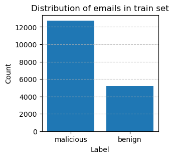
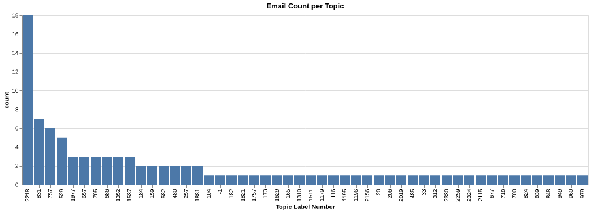
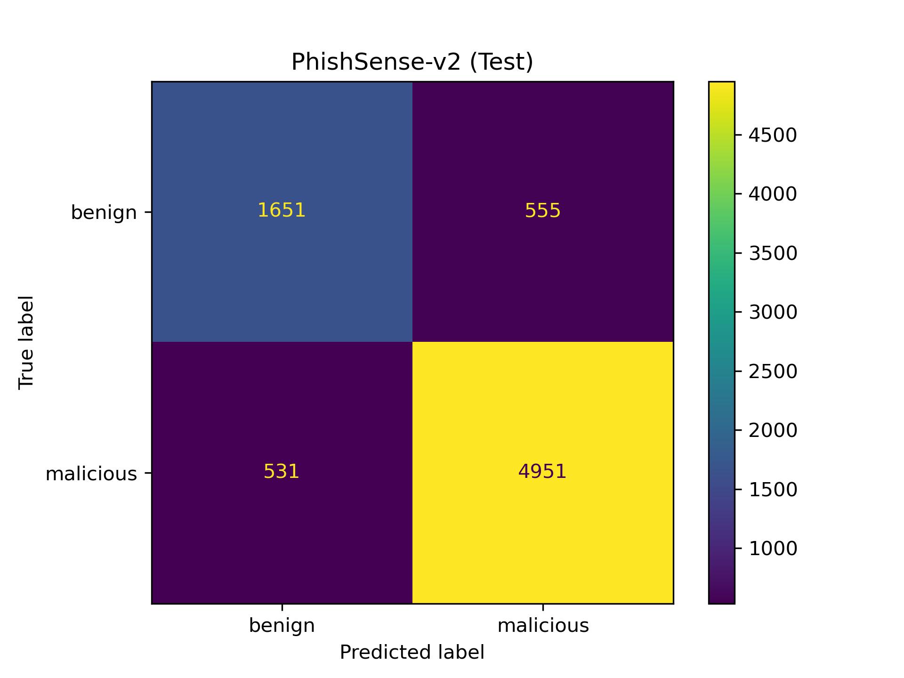
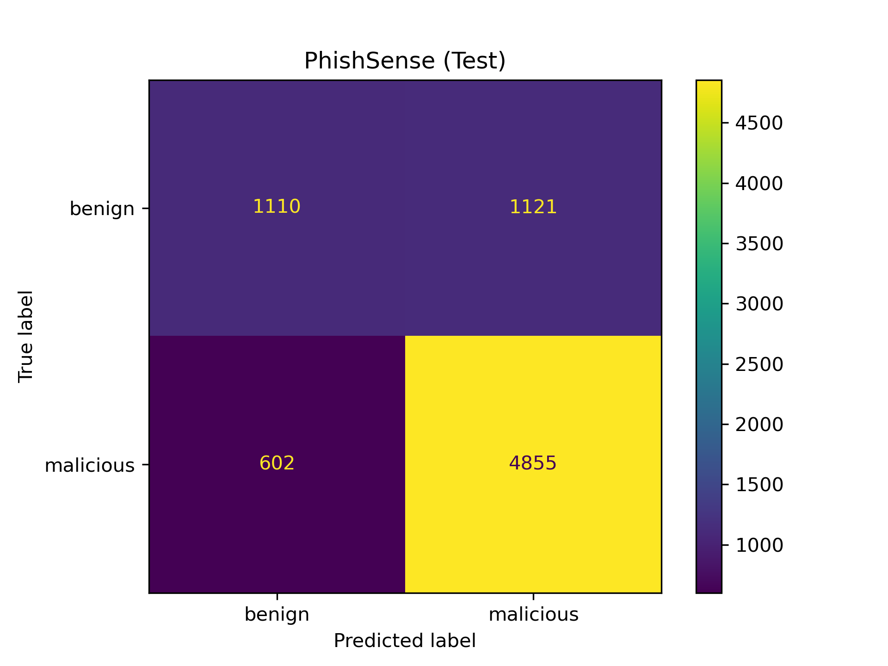
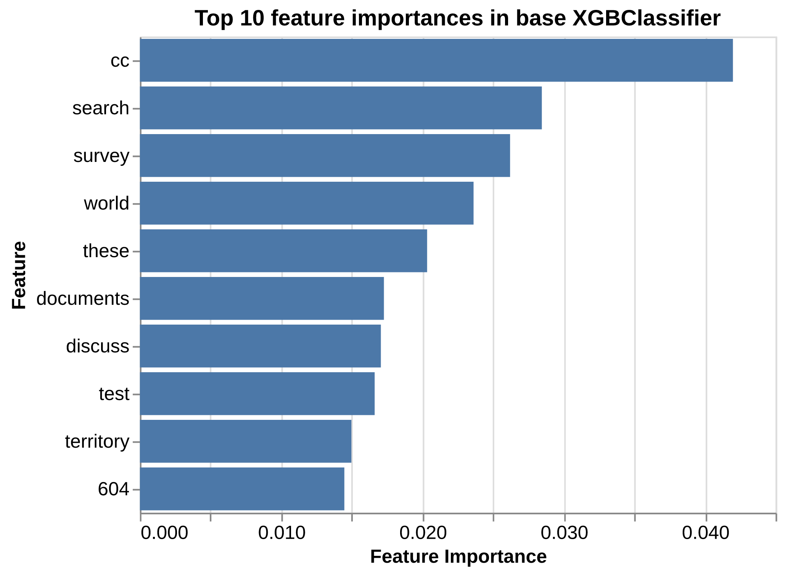
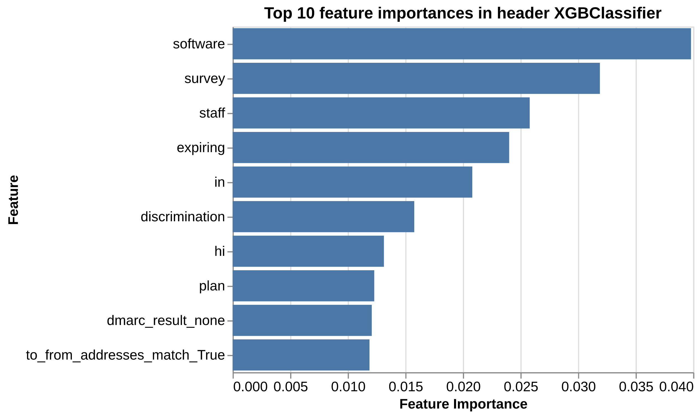
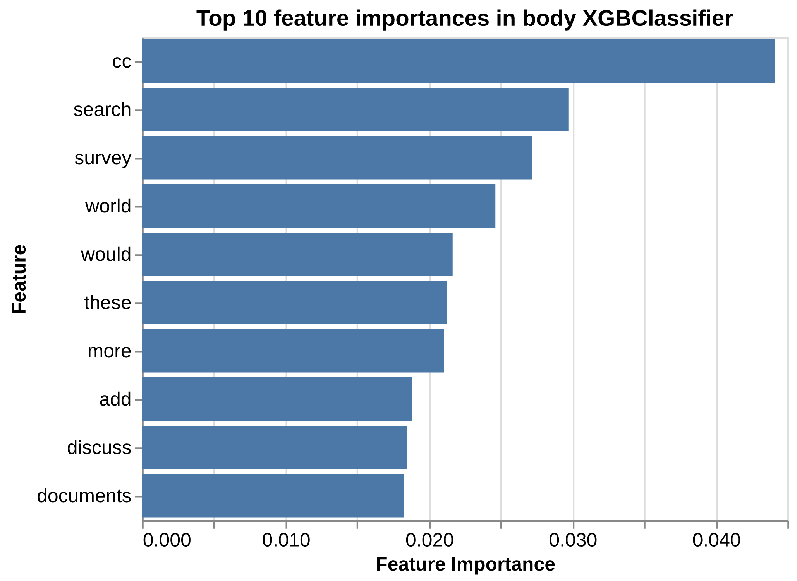

flowchart LR
EMAIL["Email"] --> SUB_FEAT
EMAIL --> BOD_FEAT
SUB_FEAT["Extract subject features with HashingVectorizer"] --> SUB_PROB
SUB_PROB["Get predicted proabilities based on subject features"] --> SCORER
BOD_FEAT["Extract subject features with HashingVectorizer"] --> BOD_PROB
BOD_PROB["Get predicted proabilities based on body features"] --> SCORER
SCORER["Scorer"] --> FINAL
FINAL["Predicted class"]
Sniffing for Phishing
Final Report for DSCI 591 Capstone Project
1 Executive Summary
UBC Cybersecurity (the Partner) currently reviews suspicious emails manually, a process hindered by high volume and time sensitivity.
We developed a machine learning (ML) pipeline to automatically classify emails as benign or malicious. This helps to reduce manual workload, accelerate threat detection, and improve cybersecurity at UBC.
We evaluated classical ML models, BERT-based architectures, and large language models (LLMs). The final solution, PhishSense-v2, uses a stacked ensemble of four parallel XGBClassifier models, combined by a SVC model.
PhishSense-v2 managed to achieve an F1-score of 0.75 on the benign class, marking a 50 percent improvement over the Partner’s existing ML pipeline.
2 Introduction
Phishing emails pose a major cybersecurity threat, often designed to trick recipients into revealing sensitive information such as credentials and personal data. According to Internet Crime Complaint Center (2025), business email compromise1 ranks second in financial impact. At UBC, email users are frequent targets of malicious email campaigns and are at risk of engaging with malicious content, putting both individuals and the institution at risk.
Users can report suspicious emails to the Partner for investigation. Emails identified as malicious and posing an urgent threat are recalled to prevent further exposure.
The Partner currently uses a ML pipeline (Figure 1) to classify reported emails. However, its performance is limited by its reliance solely on the email’s subject and body. As a result, Analysts must manually review all reported emails to determine whether similar messages should be recalled from other inboxes. Given the high volume of reports, this process is both time-consuming and resource intensive.
2.1 Objectives
In collaboration with the Partner, we aim to develop a new ML pipeline that classifies an email as either benign or malicious through:
Enhancing feature extraction and engineering to better leverage both email metadata and content.
Applying a combination of classical and advanced ML techniques to improve classification accuracy.
The primary objective is to accurately identify benign emails, thereby reducing the number of tickets requiring manual review. This, in turn, shortens the Partner’s response time and strengthens cybersecurity at UBC.
3 Proposed Data Science Techniques
We explored three distinct approaches in this project:
Classical ML models, with a strong emphasis on feature engineering to extract meaningful signals from email data.
Bidirectional Encoder Representations from Transformers (BERT) language models, which learn complex patterns directly from raw text using deep contextual embeddings.
Large language models (LLMs), which leverage pre-trained models and prompt engineering to perform classification with minimal task-specific training.
3.1 Approach 1: Classical ML models
Classical ML models are relatively simple and have low computational overhead. This approach relies heavily on feature engineering to construct a representation of each email that is both information-rich and tailored to the model’s predictive capabilities. By transforming raw email data into structured features, we aimed to capture relevant patterns that could distinguish between benign and malicious messages.
3.1.1 Feature extraction
We retrieved metadata and content from emails using the Python email package. The extracted metadata2 can provide valuable signals for assessing the potential malicious intent of an email.
To ensure consistency and robustness, we only considered header fields that comply with Request For Comments (RFC) standards. Non-compliant header fields3 were dropped due to their variability and lack of standardisation.
Email content is typically multipart, with each part associated with a content type. Most emails include a body in either HTML or plain text format or both. Many also contain additional content types such as images, videos, or application files. For the purposes of this project, we retained only the email body (both HTML and plain text parts) as the primary source of content for analysis. CountVectorizer was used to obtain representations of the plain text email body.
3.1.2 Feature engineering
To enhance predictive performance, we engineered features4 that capture key characteristics distinguishing benign emails from malicious ones. These features were selected based on domain expertise provided by the Partner and research in phishing and spam detection, with the goal of creating a feature set that is both interpretable and effective for classification.
We incorporated email authentication5 results that verify the legitimacy of the sender’s domain and ensure that the message has not been altered in transit, which can be strong indicators of email authenticity.
In addition, we engineered features to detect spoofing or obfuscation attempts, such as the number of mail server hops, mismatches between the From and Reply-To domains, and discrepancies between the name servers of the originating mail server and the sender’s domain.
Malicious emails are also often generated using tools purchased on the dark web, resulting in messages that are poorly written, heavily formatted in HTML, and designed to evade detection. To capture these traits, we included features such as the number of grammatical errors, the frequency of whitespace6 characters, and the presence and types of non-textual content7.
3.1.3 Classifiers
Table 1 lists the classical models evaluated in this project. These models were chosen based on their interpretability, computational efficiency, and historical effectiveness in text and email classification tasks.
| Model | Description |
|---|---|
DummyClassifier (Buitinck et al. 2013) |
Serves as a baseline for benchmarking model performance |
LogisticRegression (Buitinck et al. 2013) |
Interpretable, captures linear relationships between features and target label (Hilbe 2016) |
GaussianNB (Naïve Bayes) (Buitinck et al. 2013) |
Simple model well-suited for text classification, efficient training time (Sammut and Webb 2011) |
SVC (Support Vector Machine) (Buitinck et al. 2013) |
Effective for binary classification in high-dimensional spaces (Sammut and Webb 2011) |
RandomForestClassifier (Buitinck et al. 2013) |
Robust to noisy data (Parmar, Katariya, and Patel 2018) |
XGBClassifier (Chen and Guestrin 2016) |
Captures non-linear relationships, supports regularization, generalizes well (Omotehinwa and Oyewola 2023) |
We also explored an ensemble learning approach using StackingClassifier (Buitinck et al. 2013), where multiple base models were trained in parallel to generate predictions. These predictions were then used as inputs for a final estimator, which produced the overall prediction. An example of the architecture for this ensemble method is illustrated in Figure 2.
flowchart TD
EMAIL["Email"] --> EST1
EMAIL --> EST2
EST1["Estimator 1"] --> FINEST
EST2["Estimator 2"] --> FINEST
FINEST["Final estimator"] --> PRED
PRED["Predicted class"]
3.2 Approach 2: BERT language models
BERT language models captures rich contextual information by modelling the semantics and relationships between words. It is highly effective for natural language processing (NLP) tasks such as classification, topic modelling, and sentiment analysis. BERT is particularly well-suited for this project, as phishing indicators are often embedded in the nuanced language of email bodies.
We applied open-source models to the cleaned plain-text content of emails to classify emails as benign or malicious, and generate labels as part of feature engineering to improve the performance of classical ML models.
Table 2 lists the BERT models evaluated in this project.
| Task | Hugging Face repository | Description |
|---|---|---|
| Classification | ElSlay/BERT-Phishing-Email-Model (Imran, n.d.) | Trained on 18,600 emails labelled as either malicious or benign |
| Classification | ealvaradob/bert-finetuned-phishing (Alvarado, n.d.) | Trained on 80,000 emails, text messages, URLs, and HTML content labelled as either malicious or benign |
| Feature Engineering (Topic Modelling) | MaartenGr/BERTopic_Wikipedia (Grootendorst, n.d.) | Trained on 1M+ Wikipedia pages; generates ~2,300 topic labels |
| Feature Engineering (Sentiment Analysis) | cardiffnlp/twitter-roberta-base-sentiment-latest (Camacho-collados et al. 2022) | Trained on 124M tweets; classifies text as positive, neutral, or negative |
3.3 Approach 3: LLMs
LLMs are well-suited for this project due to their ability to infer meaning from unstructured text, outperforming models like BERT. Unlike classical models, LLMs require minimal feature engineering.
A locally-hostel LLM8 (Unsloth AI 2025) was used for zero-shot email classification and to reverse-engineer label assignments, supporting feature engineering for classical models. In both cases, only the email header or body was provided due to context window limitations. The general workflow is illustrated in Figure 3.
flowchart TD
A["Prompt LLM to classify an email or justify a label with header or body attached"] --> B
B["LLM generates unstructured response that includes its reasoning process"] --> C
C["Prompt LLM again to summarise the unstructured response into a structured JSON format"] --> D
D["LLM summarises unstructured response into a structured JSON response"]
Table 3 describes the fields in structured JSON response.
| Field | Description | Possible values |
|---|---|---|
| Label | Label assigned by LLM | benign, malicious |
| Confidence | Confidence level of the label assignment | low (weak/conflicting evidence), medium (some uncertainty), high (strong evidence) |
| Reasons | List containing three reasons justifying given label | Short justifications referencing parts of the email |
We leveraged prompt engineering9 to improve the quality and ensure consistency of the LLM’s responses.
4 Proposed data product: PhishSense-v2
PhishSense-v2 is a containerised ML pipeline that predicts the probability of an email being benign. The pipeline is visualised in Figure 4.
flowchart TD
A["Email (in eml file format)"] --> B
B["Extract metadata from email"] --> C
C["Generate feature set from metadata"] --> D
D["Use feature set to predict probabilities"]
It is encapsulated in a Docker container and callable via a RESTful API, allowing PhishSense-v2 to serve as a drop-in replacement for the current PhishSense. This design aligns with the Partner’s specifications, requiring minimal workflow changes for Cybersecurity Analysts reviewing reported emails.
The step-by-step workflow is described in Figure 5.
flowchart TD
A["User reports a suspicious email"] --> B
B["IT ticketing system receives the report"] --> C
C["IT ticketing system automatically makes a HTTP POST request to PhishSense-v2 with reported email attached"] -->D
D["PhishSense-v2 generates predicted label with associated probabilities in JSON format"] --> E
E["PhishSense-v2 makes a HTTP POST request to the IT ticketing system with the predictions in JSON format attached"] --> F
F["IT ticketing system receives the prediction data and automatically populates the predicted label and associated probabilities"]
5 Implementation
5.1 Dataset
The dataset comprises 25,625 emails that were reported as suspicious by users and had already bypassed existing rule-based filters. They are in the eml file format and are manually reviewed and labelled by the Partner.
Table 4 defines the target labels used by the Partner.
| Target | Threat level when reviewed | Sub-labels |
|---|---|---|
benign |
Little/no threat | legitimate, spam |
malicious |
High/active threat | CEO_fraud, phishing, reply-chain-attack |
The dataset was split into train (70%) and test (30%) sets to ensure robust model evaluation and prevent data leakage (Rosenblatt et al. 2024). To facilitate rapid prototyping and debugging, we created two smaller subsets of the train set containing 3,000 and 200 samples respectively using stratified random sampling (Singh et al. 1996). This preserves statistical characteristics of the full train set (Dobbin and Simon 2011) and ensures that the evaluation metrics reflect the model’s performance across all classes, particularly in the presence of class imbalance.
Figure 6 shows the distribution of emails across the target labels for the train set.

5.2 Evaluation metrics
Model performance will be evaluated using the F1-score10 for the benign class and the overall false negative/benign rate11 (FNR). A high F1-score reflects the model’s ability to correctly identify most benign emails while minimising false negative/benign predictions. Maintaining a low FNR is also critical to avoid mistakenly dismissing malicious emails, which would increase risk exposure for UBC email users.
The Partner has set performance targets of an F1-score ≥ 0.85 and an FNR ≤ 0.001.
6 Results
6.1 Proposed data science techniques
6.1.1 Approach 1: Classical ML models
Table 5 outlines the cross-validation results of the classical models.
| Model | Fit time (s) | Score time (s) | Train score | Valid score |
|---|---|---|---|---|
| DummyClassifier | 0.408 (+/- 0.025) | 0.097 (+/- 0.018) | 0.000 (+/- 0.000) | 0.000 (+/- 0.000) |
| LogisticRegression | 0.875 (+/- 0.090) | 0.097 (+/- 0.021) | 0.990 (+/- 0.002) | 0.609 (+/- 0.065) |
| GaussianNB | 1.183 (+/- 0.093) | 0.295 (+/- 0.009) | 0.969 (+/- 0.004) | 0.561 (+/- 0.066) |
| SVC | 1.237 (+/- 0.039) | 0.278 (+/- 0.021) | 0.483 (+/- 0.018) | 0.281 (+/- 0.120) |
| RandomForestClassifier | 2.461 (+/- 0.265) | 0.124 (+/- 0.015) | 0.999 (+/- 0.001) | 0.493 (+/- 0.105) |
| XGBClassifier | 4.098 (+/- 0.256) | 0.102 (+/- 0.018) | 0.998 (+/- 0.001) | 0.605 (+/- 0.071) |
We also implemented an ensemble model using StackingClassifier, where two separate XGBClassifier models are trained on header and content features, respectively. Their predictions are combined by a final estimator to produce the overall output. The performance of this ensemble approach is summarized in Table 6.
| Final estimator | Fit time (s) | Score time (s) | Train score | Valid score |
|---|---|---|---|---|
| LogisticRegression | 19.521 (+/- 1.332) | 0.107 (+/- 0.016) | 0.994 (+/- 0.003) | 0.617 (+/- 0.057) |
| SVC | 19.582 (+/- 1.081) | 0.120 (+/- 0.020) | 0.983 (+/- 0.010) | 0.614 (+/- 0.022) |
| XGBClassifier | 20.050 (+/- 1.178) | 0.114 (+/- 0.025) | 0.933 (+/- 0.028) | 0.557 (+/- 0.043) |
We further separated the header and content features into text and non-text features, training four separate XGBClassifier models accordingly. SVC was used as the final estimator to aggregate their predictions. Table 7 presents the performance comparison across the single-, dual-, and quad-model architectures.
| Architecture | Fit time (s) | Score time (s) | Train score | Valid score |
|---|---|---|---|---|
| 1 XGBClassifier | 4.075 (+/- 0.307) | 0.098 (+/- 0.017) | 0.998 (+/- 0.001) | 0.605 (+/- 0.071) |
| 2 XGBClassifier + SVC | 19.445 (+/- 1.078) | 0.122 (+/- 0.022) | 0.983 (+/- 0.010) | 0.614 (+/- 0.022) |
| 4 XGBClassifier + SVC | 18.362 (+/- 1.224) | 0.119 (+/- 0.015) | 0.987 (+/- 0.005) | 0.647 (+/- 0.027) |
6.1.2 Approach 2: BERT language models
Table 8 outlines the results achieved by the BERT language models for classification.
| Model | Precision | Recall | F1-score | False Benign Rate / FNR | False Malicious Rate / FPR |
|---|---|---|---|---|---|
| elslay | 0.211 | 0.632 | 0.316 | 0.556 | 0.368 |
| ealvaradob | 0.179 | 0.368 | 0.241 | 0.395 | 0.632 |
Figure 7 visualises the count of topics obtained for a sample of 100 emails.

Table 9 outlines the results achieved by the BERT language model for sentiment analysis on a sample of 100 emails.
| Positive | Neutral | Negative | Parsing Error |
|---|---|---|---|
| 11 | 81 | 6 | 2 |
6.1.3 Approach 3: LLMs
The LLM produced accurate classifications and high-quality responses that closely mirrored human reasoning when evaluating emails. However, there are multiple occasions where the quality of responses were poor, where the model showed signs of hallucinations and leakage of training data.
Sample responses can be viewed in Section 11.
6.2 Proposed data product: PhishSense-v2
PhishSense-v2 contains an classifier with a stacked architecture implemented using StackingClassifier, comprising four XGBClassifier estimators whose predictions are aggregated by a final SVC to produce the final classification. The model takes as input the engineered feature set (split into header and content features), along with separate CountVectorizer representations of the subject line and cleaned plain text.
Table 10 outlines the performance of PhishSense-v2 with the current production model, PhishSense, for comparison.
| Model | Dataset | Precision | Recall | F1-score | False Benign Rate / FNR | False Malicious Rate / FPR |
|---|---|---|---|---|---|---|
| PhishSense-v2 | train | 0.887 | 0.889 | 0.888 | 0.046 | 0.111 |
| PhishSense-v2 | test | 0.757 | 0.748 | 0.753 | 0.097 | 0.252 |
| PhishSense | test | 0.648 | 0.498 | 0.563 | 0.11 | 0.502 |
Figure 8 shows the confusion matrices for PhishSense-v2 and PhishSense evaluated on the test set.


7 Discussion
7.1 Proposed data science techniques
7.1.1 Approach 1: Classical ML models
As shown in Table 5, XGBClassifier outperformed most other models, which can be attirbuted to its ability to capture non-linear relationships between the features and target. However, an inspection of its feature importances revealed a heavy reliance on CountVectorizer features, shown in Figure 9.

XGBClassifier
To address this, we adopted an ensemble approach using a StackingClassifier that combines two XGBClassifier base estimators – one trained on email headers and the other on content – whose predictions are aggregated by a final estimator. The goal was to allow different parts of the email to be independently analysed and improve model generalization. However, Figure 10 (a) and Figure 10 (b) show the base estimators remained overly dependent on CountVectorizer features.


XGBClassifier
To mitigate this, we expanded the ensemble to include four XGBClassifier models: each trained on either the header or body and using either engineered features or CountVectorizer features. This design aimed to reduce overfitting to the CountVectorizer features.
7.1.2 Approach 2: BERT language models
7.1.2.1 Text classification
Both BERT classifiers struggled with classifying benign emails within the sampled test data, with over half of the malicious emails were misclassified as benign by both classifiers.
This poor performance can be attributed to differences in the training data and our dataset. Specifically, the classifiers used were trained with datasets that include legitimate corporate communication emails as the benign class. In contrast, both classes in our dataset consists suspicious emails that made it to users’ inboxes and reported, resulting in a narrower distinction between benign and malicious examples.
7.1.2.2 Feature engineering
The high variance of labels generated by the topic modelling BERT model introduced significant noise, which reduces the reliability of using topic modeling as a feature. Additionally, applying the model to the full training dataset (17,937 emails) would be time-intensive, both in computation and in validating topic accuracy. As such, we decided not to include topic modeling as a feature in our classification task.
7.1.2.3 Sentiment analysis
The model labelled most emails as neutral, with most empty emails being labelled as positive. As such, we concluded that the sentiment analysis BERT model did not provide meaningful signals for our email classification task and decided against incorporating it in our data product.
7.1.3 Approach 3: LLMs
A key strength of LLMs is the interpretability of their outputs. Each classification includes a natural language rationale, enhancing transparency and trust. LLMs also require no task-specific training or manual feature engineering and can natively process multilingual text, making them highly adaptable.
Despite these benefits, LLMs face significant challenges in production. The most critical is their high computational cost, where each classification took about 6 minutes, with an additional 2 minutes for summarisation in a resource-unconstrained environment. Each prompt consumed ~45 GB of RAM and fully utilised all 16 CPU cores of the VM. While GPU acceleration could reduce inference time, the resource demands remain prohibitive for production.
Another concern is hallucination, especially under resource constraints involving swap memory that leads to inconsistent outputs. In some cases, signs of training data leakage were observed, with the model repeating phrases or generating nonsensical output until the token limit was reached.
As such, we have decided against incorporating LLMs into PhishSense-v2. Despite that, we have incorporated the insights in feature engineering for classical models.
7.2 Proposed data product: PhishSense-v2
While PhishSense-v2 showed measurable improvements over the original model, its performance revealed several important nuances. This includes dataset quality and the influence of probability thresholds on classification outcomes.
7.2.1 Dataset quality
7.2.1.1 Similarity between legitimate and spam emails
Effective model training depends on high-quality data. A key challenge in this project is the similarity between legitimate and spam emails. Most user-reported emails contained suspicious elements regardless of their label, making it challenging for the model to distinguish between classes. While spam emails (Figure 11) appear more suspicious than legitimate messages, both are considered as benign (refer to Table 4). Since the model does relies on the email body, these mixed signals hampers its ability to learn a clear boundary between benign and malicious bodies.
spam email labelled as benign
7.2.1.2 Ambiguous relationship between features and label
In several instances, the engineered features did not correspond well with the assigned labels. For example, Figure 12 shows two nearly identical emails (with the same template and 1 minor difference) have similar feature sets, but were labelled differently. These inconsistencies weaken the relationship between features and labels, making it difficult for the model to learn reliable patterns or infer the logic behind label assignments.
benign
malicious
7.2.1.3 Malicious emails encapsulated within legitimate emails
Some emails are user-forwarded malicious emails, where a malicious email is encapsulated within an otherwise legitimate email. In such cases, the email header may appear benign while the content is malicious which creates conflicting signals.
7.2.1.4 Empty emails
Some emails in the dataset had empty bodies, resulting in the model defaulting to predicting benign, even when the subject line is suspicious. To address this, we relabelled all empty-content emails as malicious, ensuring that future emails with empty content are flagged for manual review.
7.2.2 URL features
We initially incorporated URL features such as detecting redirection and verifying the security certificate during prototyping. However, an exploration of the extracted URLs revealed that most of the links lead to web forms that no longer exist or are broken. As web pages are dynamic, it was not possible to obtain the characteristics of the URLs at the time when the email was sent.
7.2.3 Probability thresholds
In PhishSense-v2, the model uses a probability threshold of above ~0.75 to classify emails as malicious, requiring high confidence before assigning the malicious label. This conservative threshold increases the FNR by misclassifying some malicious emails as benign. However, lowering the threshold to 0.3 does not significantly affect its performance metrics. To support flexible decision-making, PhishSense-v2 returns the probability values instead.
8 Conclusion
This project introduced a new ML pipeline to streamline the Partner’s workflow for reviewing suspicious emails. Our data product, PhishSense-v2, outperformed the existing pipeline in classifying benign emails. While further testing and refinement are recommended, the results demonstrate meaningful progress towards automating the email review process and enhancing cybersecurity at UBC.
8.1 Recommendations
To further improve the model performance, we propose the following recommendations for future work.
8.1.1 Audit label assignments in the dataset
A comprehensive audit of label assignments is essential, particularly in cases where structurally similar emails have been assigned different labels. This process should involve the development of clear and standardised labelling guidelines. Such efforts will help reduce ambiguity and improve abel consistency, thereby strengthening the foundation for model training.
8.1.2 Cleaning the dataset
The dataset should ideally consist only of suspicious emails in its original form, preserving both the header and body content. This helps to minimise noise introduced by forwarded messages, where benign headers accompany malicious content. A cleaner dataset will help the model learn more accurate patterns and reduce wrong predictions.
8.1.3 Expand feature set for prediction
While the team lacks formal training in email security, we believe we have engineered the best possible feature set within the time constraints of this project. Nevertheless, the feature set could be further expanded through collaboration with domain experts. A more comprehensive set of features would provide the model with richer information, potentially improving prediction accuracy.
8.1.4 Explore transformer-based models
Due to limited computational resources, the use of BERT language models was constrained. Future work should revisit these models, as BERT’s ability to capture semantic nuances could significantly improve classification accuracy. Fine-tuning on the Partner’s dataset may enhance contextual understanding, though it requires a large and well-cleaned dataset.
9 Appendix 1
Table 11 lists the features that were extracted from the eml files.
eml files
| Feature | Description |
|---|---|
From_email |
Sender’s email |
From_email_domain |
Sender’s email domain |
To_email |
Recipient’s email |
To_email_domain |
Recipient’s email domain |
Subject |
Email subject line |
Received |
Routing information of the email |
Authentication-Results |
Summary results of authentication checks |
Received-SPF |
SPF check result |
DKIM-Signature |
DKIM check result |
Content-Language |
Language declared for the email content |
Reply-To_domain |
Reply-To email domain |
Content_types |
Content types present in the email |
text_html |
HTML content of the email body |
text_plain |
Plain text content of the email body |
text_clean |
Cleaned plain text content (with non-UBC email tag and newline characters removed) |
text_hyperlinks |
List of hyperlinks in the email body |
Table 12 and Table 13 list the features that were engineered from the header and body of the eml files respectively.
| Feature | Data type | Description |
|---|---|---|
subject |
str | Email subject line. |
url_present_in_subject |
bool | If email subject line contains a URL. |
routing_length_before_ubc |
int | Number of mail servers the email passed through before reaching a UBC mail server. |
dmarc_authentication_present |
bool | If email includes a DMARC result. |
dkim_sender_domains_match |
bool | If DKIM signing domain matches the sender’s domain. |
to_from_addresses_match |
bool | If the recipient’s and sender’s email addresses are the same. |
sender_email_spf_match |
bool | If sender’s email domain matches the domain in the SPF results. |
different_reply_domains |
bool | If Reply-To domain is different from sender’s domain. |
internal_server_transfer_count |
int [0, ∞] | Number of internal mail servers the email passed through before reaching an external mail server |
name_server_match |
bool | True if name servers of sender’s domain matches name servers of the mail server that the email originated from. |
dkim_result |
str | Result of DKIM check (e.g., pass, fail, none). |
spf_result |
str | Result of SPF check (e.g., pass, fail, softfail). |
dmarc_result |
str | Result of DMARC check (e.g., pass, fail, none). |
| Feature | Data type | Description |
|---|---|---|
word_count |
int [0, ∞] | Total number of words in text_clean. |
readable_proportion |
float [0,1] | Proportion of text_clean length over text_html length. |
whitespace_ratio |
float [0,1] | Ratio of whitespace or newline characters to total words in text_clean. |
alphabet_proportion |
float [0,1] | Proportion of alphabetical to total characters in text_plain. |
grammar_error_rate |
float [0,1] | Number of grammatical mistakes in text_plain, normalised by word_count. |
english_french_proportion |
float [0,1] | Proportion of text_plain that is in English or French. |
text_content_count |
int [0, ∞] | Number of parts of text-based content (e.g., text/plain, text/html) in the email. |
multimedia_content_count |
int [0, ∞] | Number of parts of multimedia content (e.g., image/JPEG, video/mpeg) in the email. |
others_content_count |
int [0, ∞] | Number of parts of all other content (e.g., application/PDF) in the email. |
hyperlink_proportion |
int [0, ∞] | Number of embedded hyperlinks, normalised by word_count. |
non_ascii_present |
bool | If the text contains non-ASCII characters (e.g., emojis, special symbols). |
hidden_text_present |
bool | If text_html contains hidden or visually obscured text (e.g., white text, small font size). |
empty_body |
bool | If email has no text in the body, no hyperlinks, and no multimedia or other content types. |
html_parsing_error |
int {-1, 0, 1} | Status code indicating HTML parsing (i.e., -1= exception occurred during parsing, 0 = no error, 1 = error found.) |
10 Appendix 2
F1-score is the harmonic mean of precision (fraction of true positives out of all positive predictions) and recall (fraction of true positives out of all positives). It combines both into a single score that balances the trade-off between false positives and false negatives.
\[ \text{F1-score} = \frac{2 \cdot \text{precision} \cdot \text{recall}}{\text{precision} + \text{recall}} \]
\[ \text{precision} = \frac{TP}{TP + FP}, \quad \text{recall} = \frac{TP}{TP + FN} \]
where TP = True Positives, TN = True Negatives, FP = False Positives, FN = False Negatives.
The False Negative (benign) Rate measures the fraction of false negatives out of all positives.
\[ \text{False Negative Rate} = \frac{FN}{TP + FN} \]
11 Appendix 3
Listing 1 shows the sample of a good response obtained when reverse-engieering a label.
**Analysis of Email Header and Content for Classification**
**1. Three Distinct Reasons Supporting 'Benign' Classification**
1. **SPF Pass Validation**: The `received-spf` header confirms the sender's IP (162.19.155.126) is permitted by the domain `kamil.tralewski@craftsplex.pl`, reducing phishing risk.
2. **Plaintext Content**: The `Content-Type` is `text/plain; charset="utf-8"`, with no attachments or embedded links, minimizing malware delivery potential.
3. **UBC Infrastructure Handling**: Multiple `Received` headers reference UBC servers (`ebc.ca`, `ubc.ca`, `mail-relay.ubc.ca`), suggesting the email passed through institutional email infrastructure, increasing legitimacy.
**2. Two Strong Reasons Against 'Malicious' Classification**
1. **No Attachments/Links**: The absence of attachments or hyperlinks in the email body reduces phishing and malware execution likelihood.
2. **SPF and DKIM Validation**: The SPF record passes, and the use of institutional email relays (e.g., `Mailbox Transport`, `Frontend Transport`) further supports authenticity.
**3. One Plausible 'Malicious' Reason**
1. **Encoded Thread-Topic**: The `Thread-Topic` is Base64-encoded (`=?utf-8?U8WCb3dhIGtsdWN6b3dlIGRvIHd5cG96eWNqb25vd2FuaWE=?=`), which could conceal malicious links or commands when decoded. While not definitive, this encoding is atypical for benign project-related emails and warrants scrutiny.
**Conclusion**:
The email exhibits strong indicators of legitimacy (SPF pass, institutional relays, plaintext content) but also raises minor red flags (encoded topic). While the benign classification is strongly supported, the encoded topic remains a plausible concern for malicious intent. Further analysis of the email body and contextual information (e.g., domain reputation of `craftsplex.pl`) would enhance confidence in the classification.Listing 2 shows the sample of a good response obtained for a classification task.
{
"label": "phishing",
"confidence": "high",
"reasons": [
"Unusual sender address format indicating potential spoofing",
"Request for immediate action ('your silence is dangerous')",
"Suspicious email content referencing confidential information and urgent tone"
]
}Listing 3 shows the truncated sample of a bad response obtained from an LLM.
{"label": "phishing", "confidence": "high", "reasons": ["urgent subject creating sense of urgency to provoke immediate action, suspicious domains and use of Mailjet infrastructure commonly associated with phishing campaigns, social engineering tactics to extract sensitive information\', " ," ]}A3. For the function $f(x)=\\frac{2 x^{5}+15 x^{4}-7 x^{2}+3 x-15}{x^{2}+2}$, calculate the derivative at the point $x=-1$. $\\frac{d f(x)}{d x}(x=-1)=$\n(A) 9\n(B) 12\n(C) 13\n(D) 16\n(E) 31\n\nProblems for 3rd yearatterpotterson3adingtoncarolynmissbourdieau12 References
Alvarado, Esteban. n.d. “BERT Finetuned on Phishing Detection.” Hugging Face. https://huggingface.co/ealvaradob/bert-finetuned-phishing.
Buitinck, Lars, Gilles Louppe, Mathieu Blondel, Fabian Pedregosa, Andreas Mueller, Olivier Grisel, Vlad Niculae, et al. 2013. “API Design for Machine Learning Software: Experiences from the Scikit-Learn Project.” In ECML PKDD Workshop: Languages for Data Mining and Machine Learning, 108–22.
Camacho-collados, Jose, Kiamehr Rezaee, Talayeh Riahi, Asahi Ushio, Daniel Loureiro, Dimosthenis Antypas, Joanne Boisson, et al. 2022. “TweetNLP: Cutting-Edge Natural Language Processing for Social Media.” In Proceedings of the 2022 Conference on Empirical Methods in Natural Language Processing: System Demonstrations, 38–49. Abu Dhabi, UAE: Association for Computational Linguistics. https://aclanthology.org/2022.emnlp-demos.5.
Chen, Tianqi, and Carlos Guestrin. 2016. “XGBoost: A Scalable Tree Boosting System.” CoRR abs/1603.02754. http://arxiv.org/abs/1603.02754.
Dobbin, Kevin K, and Richard M Simon. 2011. “Optimally Splitting Cases for Training and Testing High Dimensional Classifiers.” BMC Medical Genomics 4: 1–8.
Grootendorst, Maarten. n.d. “BERTopic Wikipedia.” Hugging Face. https://huggingface.co/MaartenGr/BERTopic_Wikipedia.
Hilbe, Joseph M. 2016. Practical Guide to Logistic Regression. CRC Press, Taylor & Francis Group Boca Raton, USA.
Imran, Hunain. n.d. “BERT Model for Phishing Detection.” Hugging Face. https://huggingface.co/ElSlay/BERT-Phishing-Email-Model.
Internet Crime Complaint Center. 2025. “Internet Crime Report 2024.” https://www.ic3.gov/AnnualReport/Reports/2024_IC3Report.pdf.
Omotehinwa, Temidayo Oluwatosin, and David Opeoluwa Oyewola. 2023. “Hyperparameter Optimization of Ensemble Models for Spam Email Detection.” Applied Sciences 13 (3): 1971.
Parmar, Aakash, Rakesh Katariya, and Vatsal Patel. 2018. “A Review on Random Forest: An Ensemble Classifier.” In International Conference on Intelligent Data Communication Technologies and Internet of Things, 758–63. Springer.
Rosenblatt, Matthew, Link Tejavibulya, Rongtao Jiang, Stephanie Noble, and Dustin Scheinost. 2024. “Data Leakage Inflates Prediction Performance in Connectome-Based Machine Learning Models.” Nature Communications 15 (1): 1829.
Sammut, Claude, and Geoffrey I Webb. 2011. Encyclopedia of Machine Learning. Springer Science & Business Media.
Singh, Ravindra, Naurang Singh Mangat, Ravindra Singh, and Naurang Singh Mangat. 1996. “Stratified Sampling.” Elements of Survey Sampling, 102–44.
Unsloth AI. 2025. “Phi-4-Mini-Reasoning-GGUF.” Hugging Face. https://huggingface.co/unsloth/Phi-4-mini-reasoning-GGUF.
Footnotes
Business email compromise is a form of scam that targets users in an organisation and seek information with the intention of defrauding the organisation.↩︎
Examples include sender and recipient email addresses, routing information, and authentication results. See Section 9 for a list of features extracted.↩︎
Non-compliant fields are typically prefixed with
X-and often appended by receiving mail servers.↩︎Supported authentication protocols include Sender Policy Framework (SPF), DomainKeys Identified Mail (DKIM), and Domain-based Message Authentication, Reporting, and Conformance (DMARC).↩︎
Whitespace characters include spaces, tabs and newline characters.↩︎
Non-texual content consist multimedia and application files.↩︎
Microsoft Phi-4-mini reasoning model (3.84B parameters) quantised by Unsloth AI with 4,096 token content window↩︎
Refer to Appendix 1 for a list of prompts used.↩︎
Refer to Section 10 for definitions.↩︎
Refer to Section 10 for definitions.↩︎